जीर्णोद्धार (Heritage Restoration)
खजुराहो स्तिथ एक प्राचीन जिनालय की प्रशस्ति में लिखा है—
"जो श्रावक इन प्राचीन जिनालयों का जीर्णोद्धार कराएगा, मैं उसका दासानुदास रहूँगा।"
इस वाक्य से प्रतीत होता है कि हमारे पूर्वजों में अपने जिनालय के प्रति कितना बहुमान हुआ करता था। एक व्यक्तित्व जो एक बहुत बड़ा राजा था, वह भी जिनालय के रक्षण के लिए दासानुदास तक होने की बात कह रहा है।
इससे स्पष्ट है कि जिनालय हमारे जीवन में कितना महत्वपूर्ण स्थान रखते हैं। शास्त्रों में भी जिन-बिम्ब दर्शन को सम्यक दर्शन का कारण माना गया है।
Jain Sangh Pune प्राचीन जैन मंदिरों के रख-रखाव, जीर्णोद्धार एवं संरक्षण के लिए विगत कई वर्षों से तमिलनाडु, कर्नाटक, आंध्र प्रदेश और महाराष्ट्र के कई क्षेत्रों में निरंतर कार्य कर रहा है।
अभी तक के जीर्णोद्धार कार्य :
| क्र.सं. | क्षेत्र / स्थान | कार्य का विवरण एवं सहयोग |
|---|---|---|
| 1 | तमिलनाडु | 225 क्षेत्रों पर 800+ साइन बोर्ड्स लगाने का कार्य (2015 से अब तक निरंतर जारी) |
| 2 | ऐनापुर मंदिर (महाराष्ट्र) | मंदिर जी का संपूर्ण जीर्णोद्धार कार्य (2014-15 का कार्य) |
| 3 | कोनकोंडा (आंध्र प्रदेश) | कुन्दकुन्द भगवान की जन्मभूमि क्षेत्र के प्रचार-प्रसार हेतु 'अहिंसा वाक' के लिए विशेष सहयोग एवं समर्थन (2015 का कार्य) |
| 4 | अवलुरपेट (तमिलनाडु) | क्षेत्र में प्रभावना एवं पूजन व्यवस्था सुचारू रूप से चलाने हेतु श्रीधरन जी को सहयोग (2015 का कार्य) |
| 5 | मदुरै (तमिलनाडु) | मदुरै जैन हेरिटेज सेंटर (धर्मशाला) का विस्तारीकरण (2015 का कार्य) |
| 6 | विभिन्न क्षेत्र | जैन प्राचीन क्षेत्रों की सुरक्षा और सार-संभाल के लिए निरंतर जागरूकता अभियान |
| 7 | कारंजा (महाराष्ट्र) | श्री चन्द्रप्रभ दिगम्बर जैन मंदिर जी में प्राचीन शास्त्रों व सामग्री के लिए शस्त्रागार निर्माण(जनवरी 2017) |
| 8 | कलगी (Gulbarga) | कलगी अहिंसा यात्रा का भव्य आयोजन एवं यहाँ के जिनालय की सुरक्षा हेतु जागरूकता अभियान (मार्च 2017) |
| 9 | हागर्गी (कर्नाटक) | प्राचीन प्रतिमा जी की सुरक्षा व सम्मान हेतु एक छोटा जिनालय बनवाया गया (अगस्त 2017) |
| 10 | भंडारकर Institute | शास्त्र संरक्षण के अंतर्गत करीबन 2 महीने निरंतर काम करके प्राचीन ग्रंथों की एक विस्तृत सूची (Inventory) तैयार की गई |
Video showing the जीर्णोद्धार work
Sign Board - दिशा सूचक
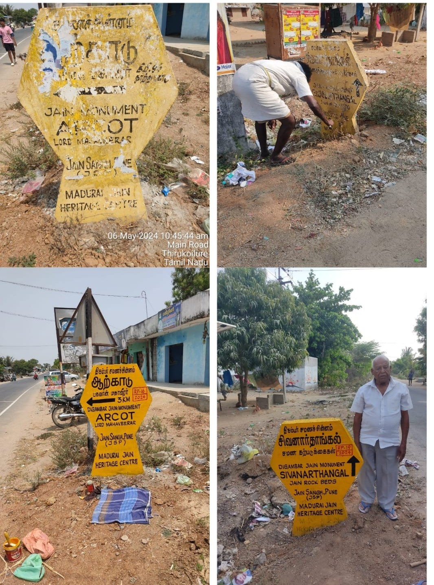
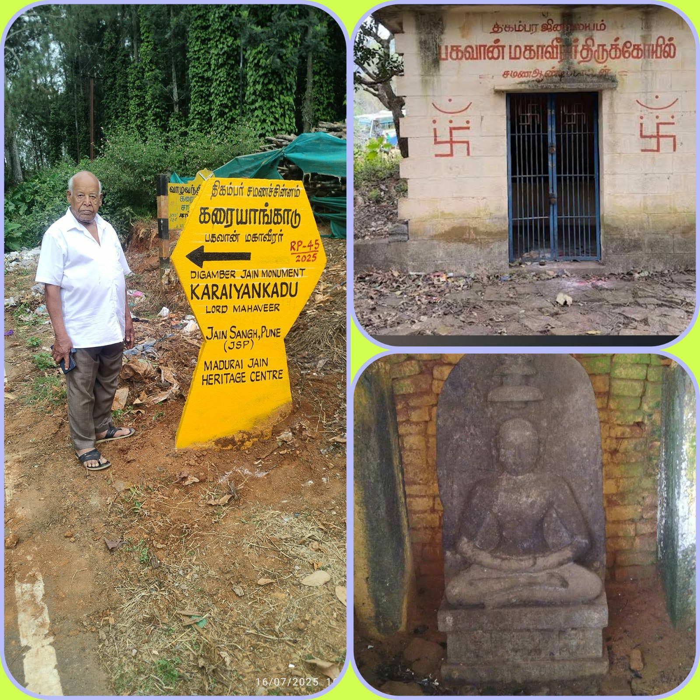
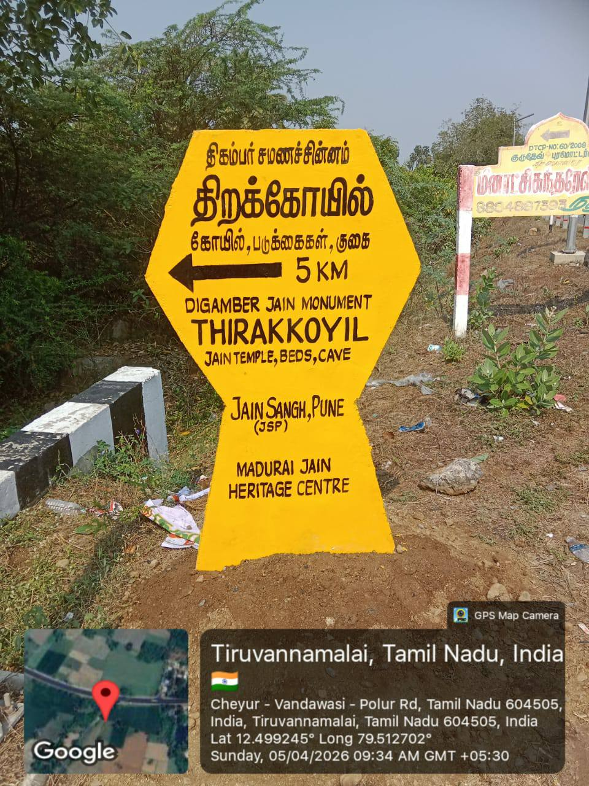
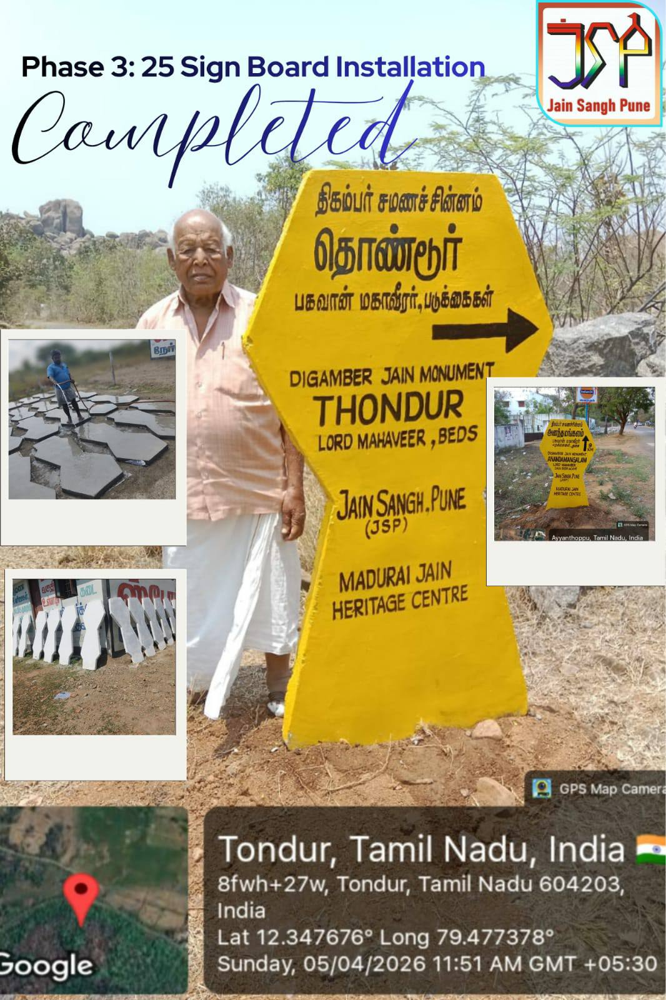
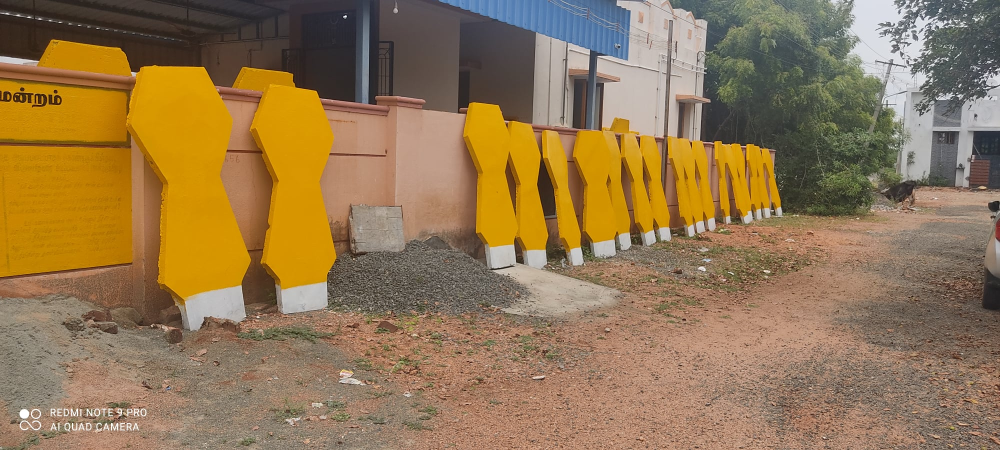
Grill work

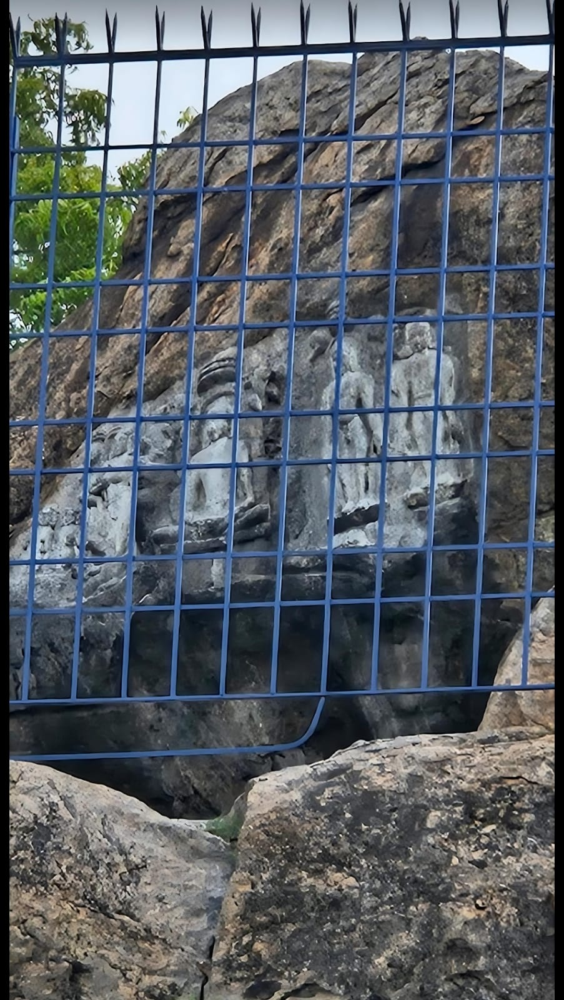
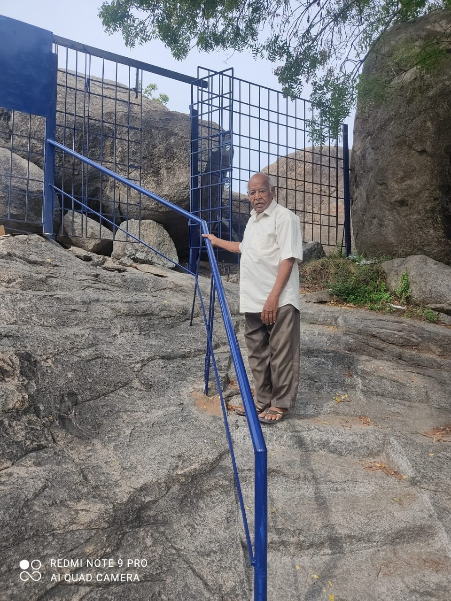
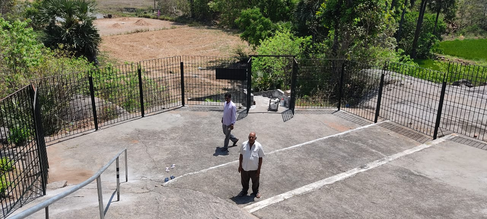
जीर्णोद्धार
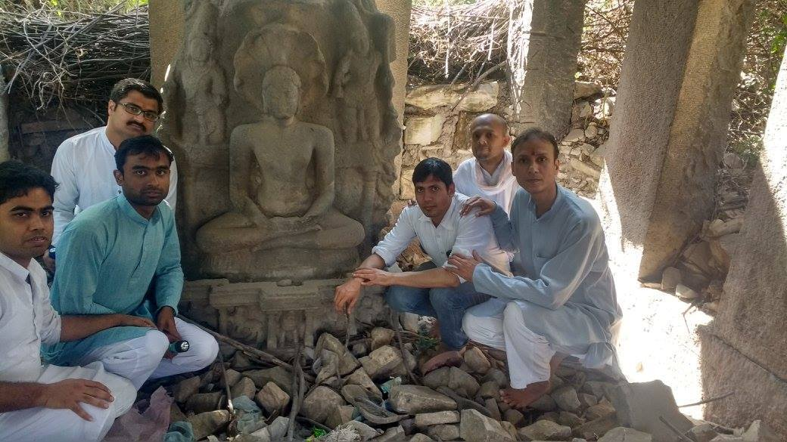
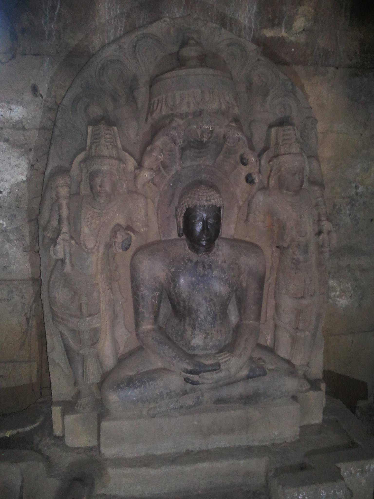
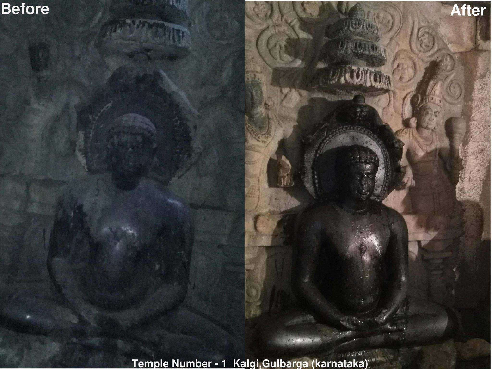
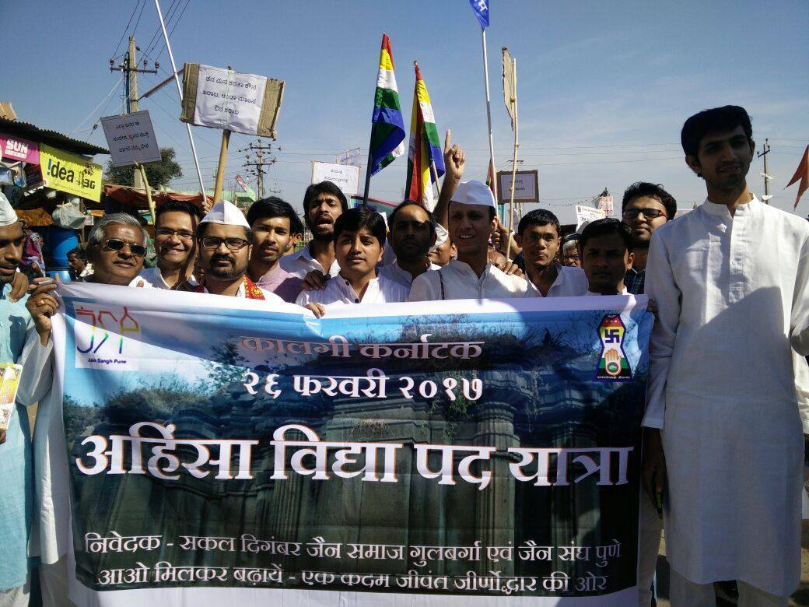
पावागढ़ मंदिर सफाई एवं संरक्षण
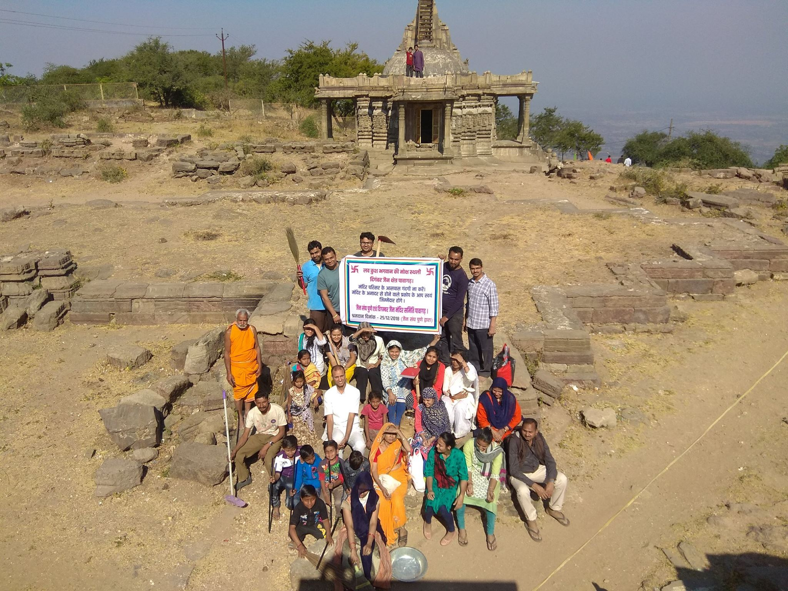
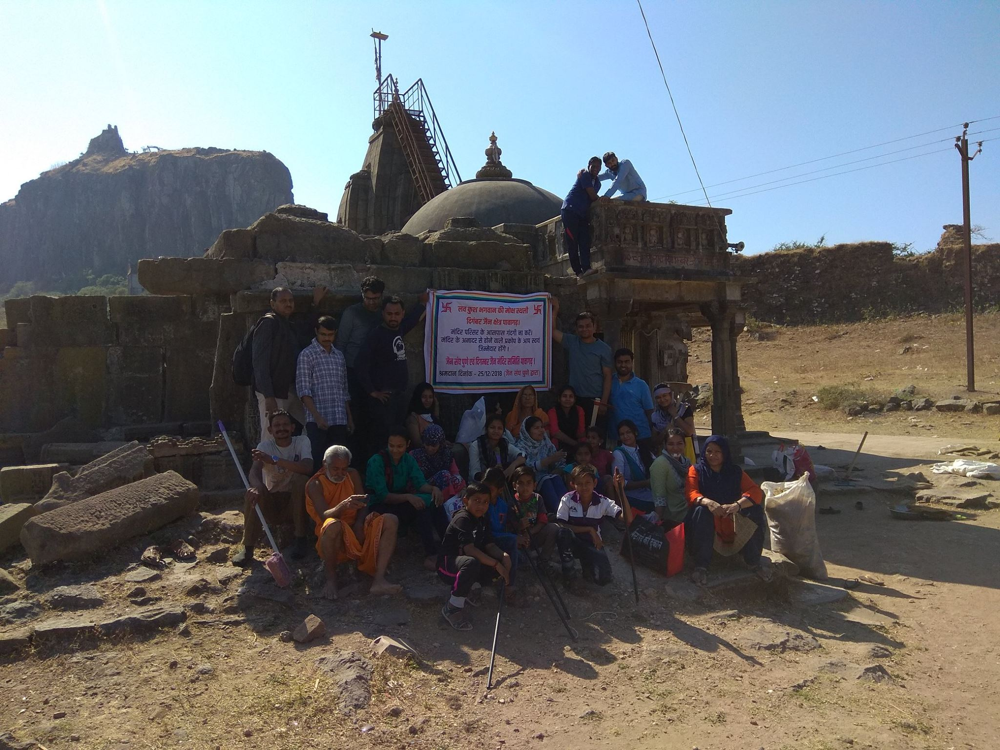
आगामी लक्ष्य एवं भविष्य की योजनाएं
📚 शास्त्र एवं लिपि संरक्षण
- विदेशी शास्त्रों की वापसी: देश और विदेशों में सुरक्षित रखे गए हमारे भिन्न-भिन्न शास्त्रों को किसी भी रूप में पुनः भारत लाने का निरंतर प्रयास करना।
- डिजिटलाइजेशन (Soft Copy): हमारे शहरों में नष्ट हो रहे अति-प्राचीन ग्रंथों को बचाना, उनकी सॉफ्ट कॉपी बनाना तथा उनके भौतिक संरक्षण का ठोस प्रयास करना।
- विद्वान तैयार करना: कर्नाटक की 'हाले कन्नड़' और तमिलनाडु की 'ग्रन्थ लिपि' को पढ़ने वाले विशेषज्ञ अब बहुत ही कम बचे हैं। इस अमूल्य धरोहर को बचाने के लिए नए विद्वान तैयार करना हमारी प्राथमिकता है।
🏗️ भौतिक जीर्णोद्धार एवं सुरक्षा
- तमिलनाडु: राज्य के बचे हुए क्षेत्रों में नए साइन बोर्ड्स लगाना तथा जिन प्राचीन गुफाओं में पूजनीय मूर्तियाँ उकेरी गई हैं, वहाँ सुरक्षा के लिए जाली आदि लगवाना।
- आंध्र प्रदेश: चिन्हित जैन धरोहर क्षेत्रों में दिशा-सूचक एवं जानकारी देने वाले बोर्ड्स लगाने का कार्य पूर्ण करना।